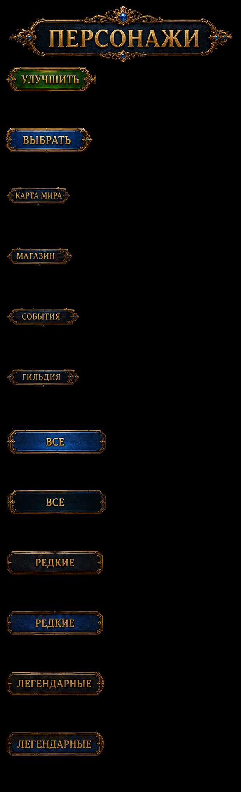
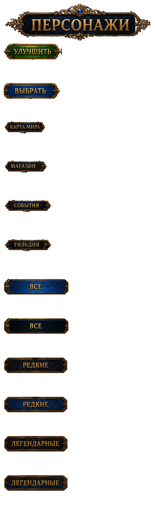
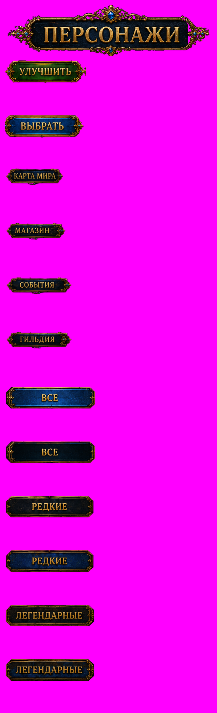

Original title/action-button RGB with accepted extraction alpha; original tab faces with traced silhouettes and alternate selection tints. Footer text uses the approved shared caption frame. English stays live. Upgrade/Select stay disabled.
Actual Unity page

